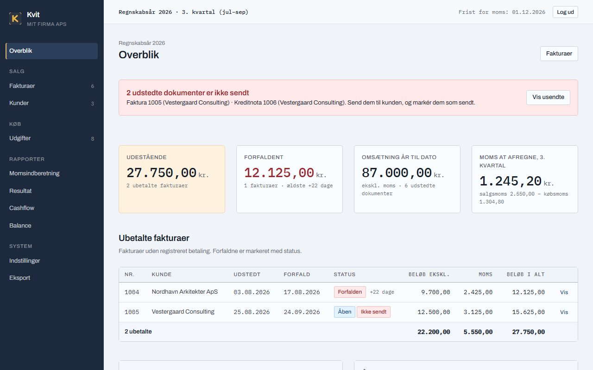
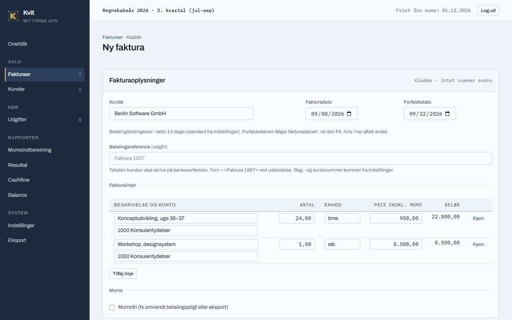
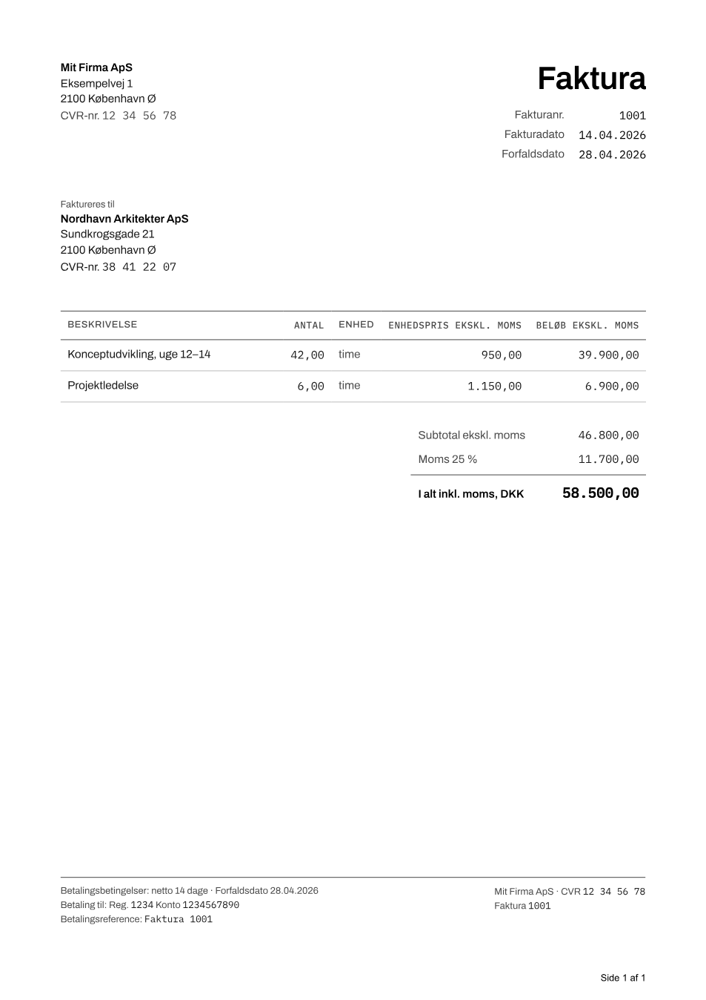
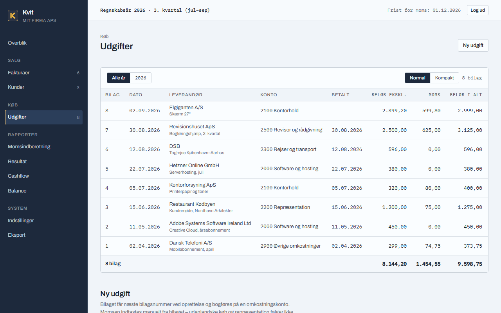
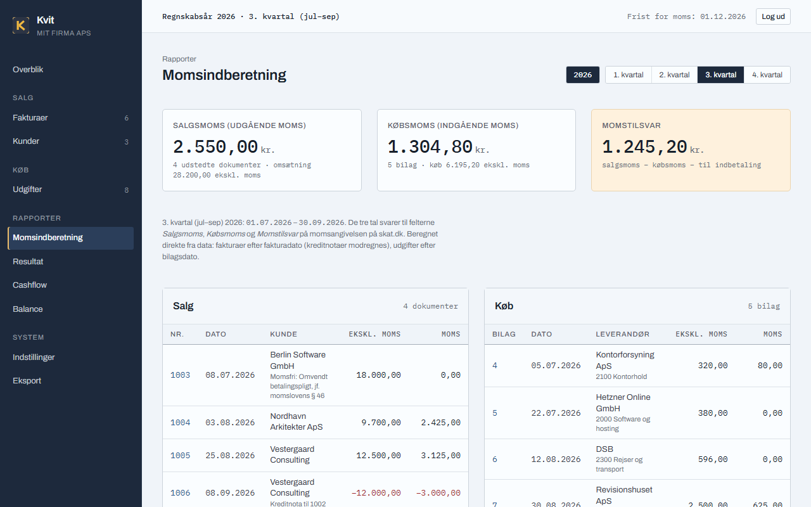
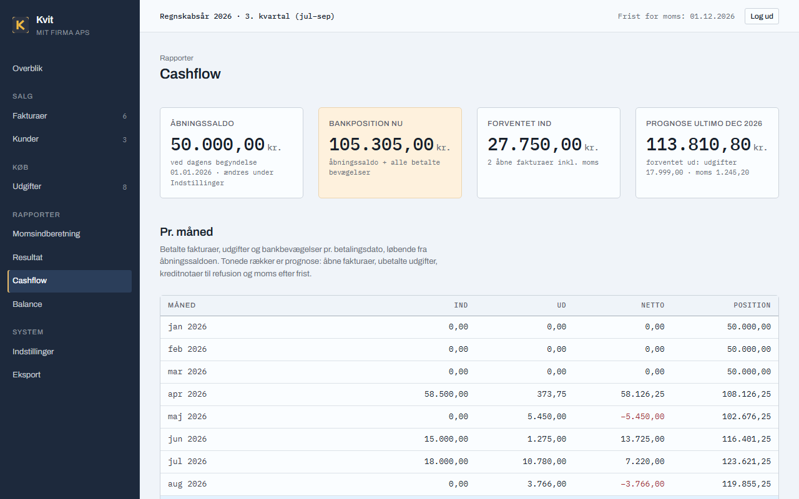
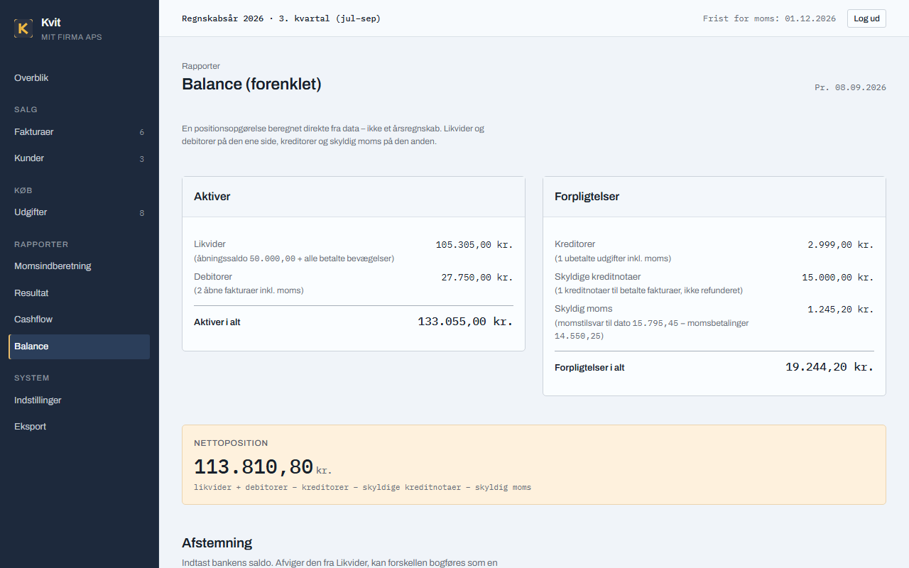
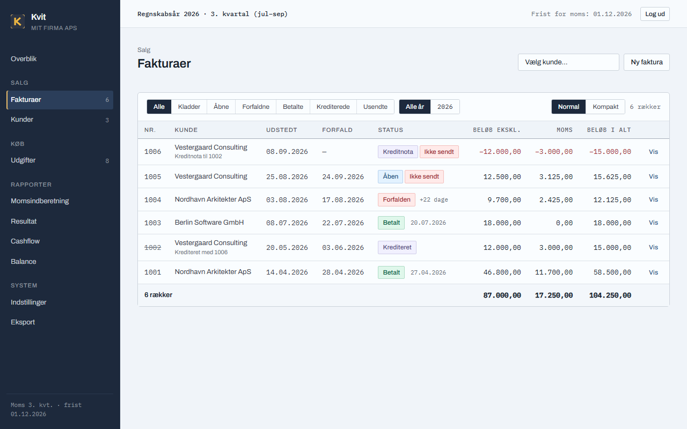

Fakturering og bogholderi til én dansk virksomhed
Kvit og frit. Fire gange om året.
Kvit udsteder fakturaer med en ubrudt nummerserie, holder bilag og udgifter sammen med deres moms, og gør de fire kvartalsfrister til tre tal, du skriver ind på skat.dk. Det kører på din egen computer eller server, og alt, det ved, ligger i én mappe, du kan kopiere som backup.

Hvad kan det

Fakturaer med ubrudt nummerserie
Kladder kan rettes og slettes frit. Nummeret tildeles først i det øjeblik, du trykker Udsted – og så låses fakturaen, PDF'en gemmes som det juridiske dokument, og den kan kun rettes med en kreditnota. Bilag som timeopgørelser samles bag fakturaen i ét PDF-dokument.

Lovlige fakturaer, pæne at se på
Alle lovpligtige felter: CVR, datoer, linjer med enhedspris, moms som separat tal, betalingsbetingelser og betalingsreference. Momsfri handel med begrundelse trykkes på fakturaen. Sort på hvidt, klar til enhver printer.

Udgifter med bilag
Hver udgift får det næste bilagsnummer og sit bilag vedhæftet (PDF, JPG eller PNG). Købsmoms tastes fra bilaget – for 25 % passer ikke altid – og hver post bogføres på en konto i en overskuelig kontoplan med grupper, som du kan rette i et regneark.

Moms uden regneark
Vælg kvartalet, og læs de tre tal, der svarer til felterne på skat.dk: salgsmoms, købsmoms og momstilsvar – med listen over de fakturaer og bilag, der ligger bag. Fristen står altid nederst i menuen.

Cashflow med prognose
Ind, ud og bankposition pr. måned. Den igangværende måned og månederne frem er tonede: her lægges åbne fakturaer, ubetalte udgifter og skyldig moms oven i, så du ser, hvor du står ved kvartalets slutning.

Afstemning på fem minutter
Én gang om måneden skriver du den saldo, banken viser. Stemmer den ikke med Likvider, bogføres forskellen som en korrektion med dato og revisionsspor. Ingen bankintegration, ingen adgangskoder til banken – bare ærlige tal.
AI-adgang med sikkerhedsmodel
Kvit har en indbygget MCP-server, så en AI-assistent (fx Claude) kan arbejde med dit bogholderi: »Hvilke fakturaer forfalder snart?«, »Hvad står jeg i banken?«, »Registrér min saldo: 84.250 kr.« Den kan markere fakturaer betalt, bogføre bankbevægelser, lave kladder og udgifter – og alt, den skriver, står i revisionssporet med afsender api.
Tre ting kan den ikke: udstede fakturaer, oprette kreditnotaer og slette noget. De to første tager numre fra den lovpligtige serie og er uigenkaldelige; sletning hører ikke til i et bogholderi. Det er ikke en manglende funktion – det er selve sikkerhedsmodellen.

Hent Kvit
Én installation er én virksomhed og én bruger. Vælg det, der passer:
| Du har | Sådan gør du |
|---|---|
| Windows | Hent Windows-versionen (.exe) fra seneste udgivelse, dobbeltklik, svar på fire spørgsmål. |
| Mac (Apple Silicon) | Hent Mac-versionen og start den fra Terminal (vejledning på udgivelsessiden). |
| Linux | Hent Linux-versionen, gør den kørbar, og start den. |
| En server med Docker (anbefalet) | install.sh (macOS/Linux) eller install.ps1 (Windows). Fire spørgsmål, så kører det. |
curl -fsSL https://github.com/kvit-app/faktura/releases/latest/download/install.sh | bash
Kontrolsummer for alle filer ligger i SHA256SUMS. Opdatering sletter aldrig data: databasen kopieres til data/backups/, før noget ændres.
Læs mere
- Brugervejledning – kom i gang, fakturaer, udgifter, moms, månedsrutinen, AI-adgang, eksport.
- Hvorfor Kvit er bygget sådan – to sider om designet: ingen posteringsmotor, rækkerne er journalen.
- Hosting-vejledning (engelsk) – VPN, offentlig adgang bag Caddy, backup, opdatering.
- Kildekoden – open source, én mappe med alle data, ingen abonnementer.
Faktura is built for one user on a private network. It has a single shared password, no 2FA, no brute-force lockout, and has not been security audited. The recommended setup is VPN-only access (e.g. Tailscale). Exposing it directly to the internet is at your own risk.
Kvit · dansk brugerflade, kun DKK · én virksomhed pr. installation · skærmbillederne er fra programmet med testdata.